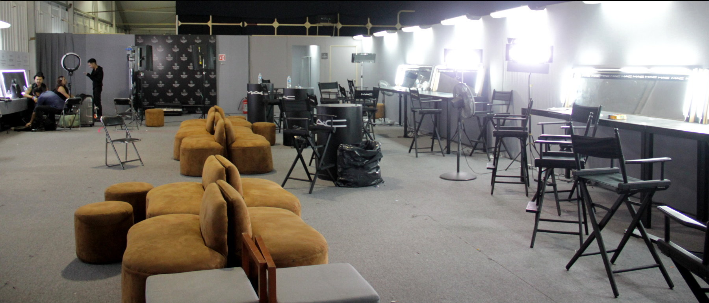
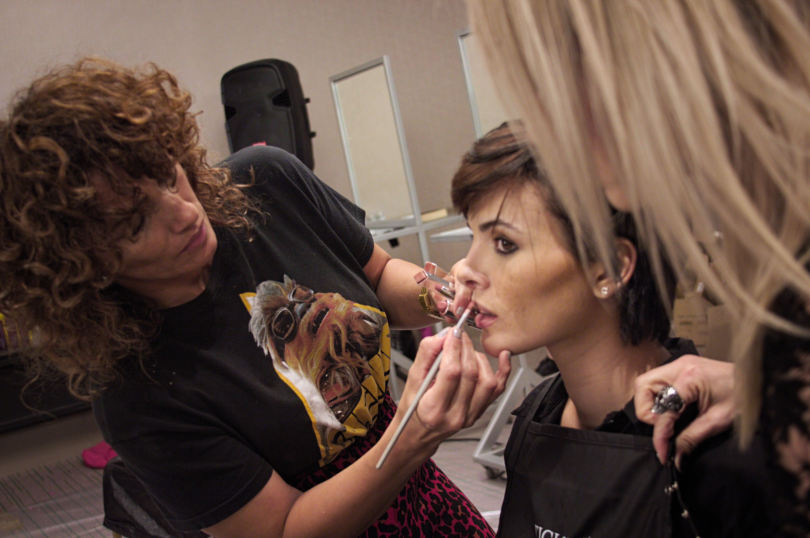
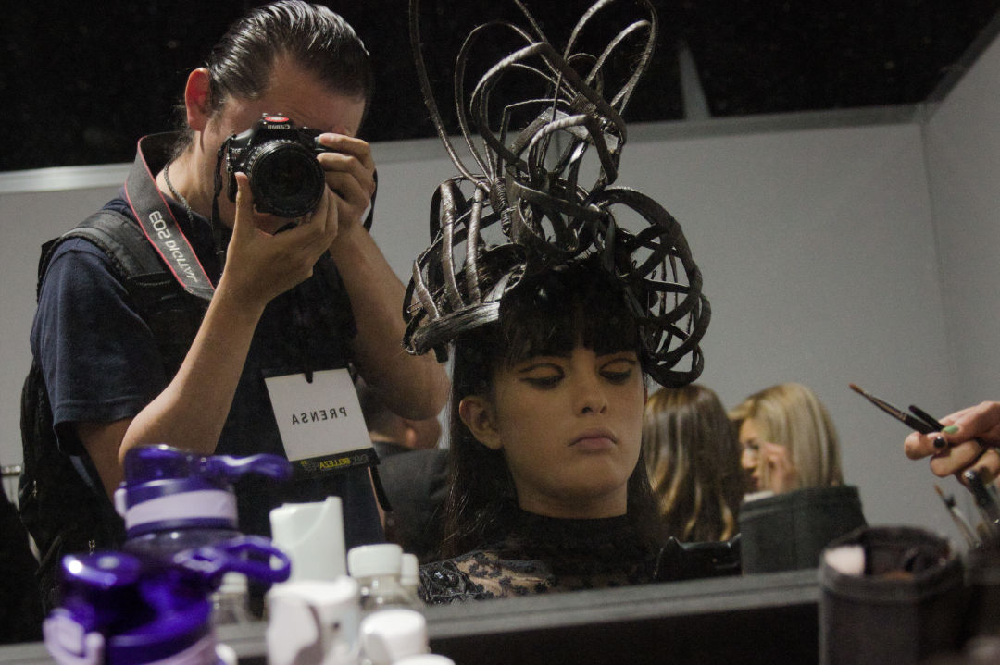

⭐️ BACKSTAGE ⭐️ Lo que pasa detrás de una pasarela de moda
Antes que comience la pasarela
Maquillistas, peinadores, asistentes, fotógrafos, modelos, diseñadores, coordinadores, vestuaristas, modelos y hasta mascotas hay en un Backstage.
Es importante que tu como modelo asistas a la hora que te han citado y si es posible, llegar un poco antes; ya que con tantas cosas, pueden existir demoras en una etapa de la preparación; si llegas tarde, simplemente te remplazaran.
Te recomiendo que no lleves joyería u otros objetos de mucho valor, en caso de que se te pase y llevas tus diamantes, pregunta a otras modelos quien es de confianza para encargar el tesoro.
Todo es estrés para los coordinadores y para los diseñadores, están apunto de presentar su trabajo a gente importante para ellos y es su oportunidad para ser vistos (también para ti); evita ser un factor más de estrés haciendo tu parte. Si ya estás ahí, es por que eres importante y es importante para todos, que todos cumplan con su parte.
Es complicado trabajar con tanta gente y que la gente haga lo que tiene que hacer.
¿Cómo ir vestida a la pasarela como modelo?
Sino tuviste otro evento, ve con ropa cómoda (blusa muy holgada o de botones), y tres cambios de ropa interior (no lencería) de color blanco, negro y piel; ya que no sabes si de momento te toca reemplazar a otra modelos y tienes que tener esos colores.Sin maquillaje, ya que te maquillarán y sin acondicionador, por que esto hará que tu cabello pese y sea muy difícil peinarlo (recuerda, todos están contra tiempo).
Puede que terminen contigo primero, en ese momento te toca esperar y puedes platicar sin distraer a las demás o leer, pero estar al pendiente de las indicaciones que se dan y más cuando está cerca la hora de comenzar.
Si eres la última, se paciente y pon atención de quien te maquillará y peinará para que no te estén buscando.
Habrá momentos en que te tengas que cambiar, y lo tienes que hacer rápido, ya que se están tomando fotos y puede que salgas desnuda intencionalmente en el fondo de una.
¿Qué más hay en backstage?
Con tantas cosas que hay de todos… maletas de los maquillistas y peinadores, maletas de otras modelos, bolsos, mesas, espejos, muchas luces, racks para ropa (burros) y claro, las cosas que lleves; y esas cosas son tu responsabilidad y tienes un lugar asignado y procura no invadir el lugar de otros para que no se revuelvan y pierdas tus pertenencias.
Todo esto y más, antes que comience la pasarela.